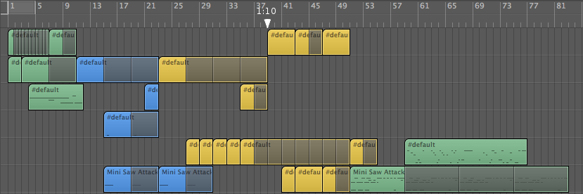

This is my music portfolio it has a bunch of my songs on it...
Completed Songs:
| Title | Music | Description |
|---|---|---|
| Comfy Nighttime | I wrote this song to convey the image of autumn at night. I tried to use a lot of delay effect to give the song a dreamy atmosphere. | |
| Sommeil | I wrote this song without an image or story in mind, instead using the feeling of just being tired or sleepy. I primarily chose instruments that had an airy feel to them to fit with the "feeling" of the song. | |
| Phase Caverns | I wrote this song imagining the exploration of a deep cave system and the nearly alien environment. To fit the darkness of this cave system I put a lot of effort into creating a strong and memorable baseline. To convey the uncertainty of this sort of place I filled one section with bits of dissonance (in rhythm and pitch) and added a phaser to the instruments used to make the listener feel like something is off. | |
| Guitar Song - Dry Orange Grass | ... | Incomplete |
| Lyrics Song - Tree | ... | Incomplete |
Incomplete Songs & Ideas:
| Codename | Music | Image | Description |
|---|---|---|---|
| chiptune-1 |  | This is pretty much just 3 different songs mashed together with some poor transitions. My favorite section is at 1:10. | |
| testing melodies |  |
This is when I was playing around with melodies, looking for a song idea. The melodies led to the creation of sommeil. | |
| portfolio-1 |  |
I made this song during a portion of a class around the start of the year. I like my composition at the beginning of this piece with the broken chords and interesting melody. | |
| spooky-soundtrack-extras | no image | I'm mostly just saving this part for myself because I like the compositional ideas. I made this at the same time as my spooky soundtrack. This was the initial inspiration for my song, Sommeil. | |
| sommeil-extras | no image | This song was some random improv that I decided to fix up. It's still not great but I like the different emotions that it evokes. The improv actually takes inspiration from the theme song of "The Legend of Zelda." | |
| assignment-2-extras | no image | I made this little melody while working on assignment 2. I like how playful it sounds. |
Return to main page